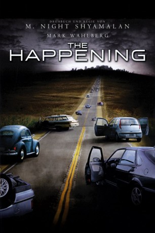
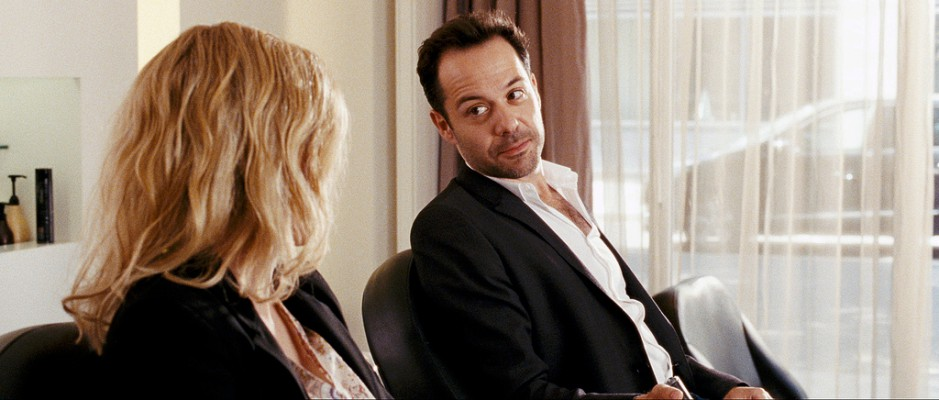
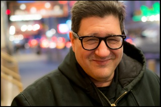
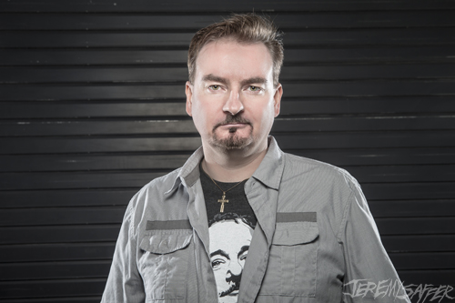
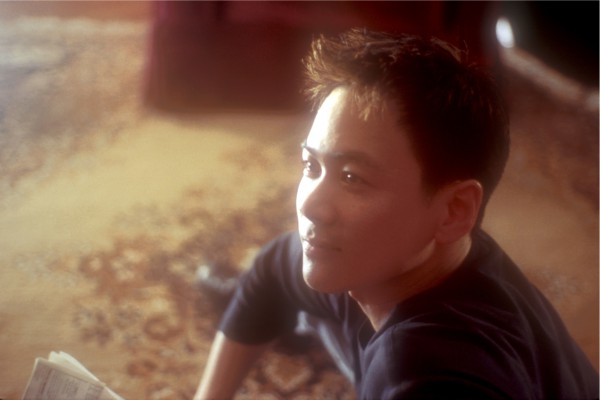
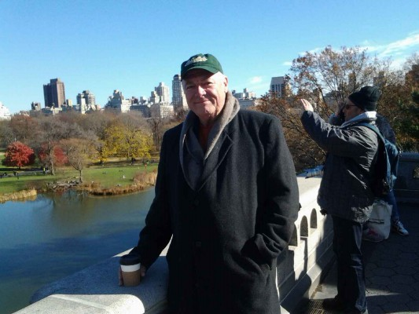
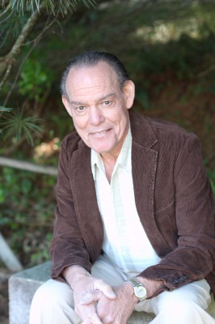

#5817 The Happening
 
 IMDB-Wertung: 5.0 / 10
IMDB-Wertung: 5.0 / 10  Metascore: 0
Metascore: 0 
Es beginnt ohne erkennbare Vorwarnung. Es scheint aus dem Nichts zu kommen. Innerhalb von Minuten bricht eine Welle mysteriöser und grauenhafter Todesfälle über große amerikanische Metropolen herein, die sich jeder Erklärung entziehen und in ihrer schockierenden Destruktivität unvorstellbar sind. Was ist verantwortlich für diesen plötzlichen Zusammenbruch menschlichen Verhaltens? Ein neuer Terroranschlag, ein fehlgeschlagenes Experiment, eine teuflische biochemische Waffe, ein Virus der außer Kontrolle geraten ist? Und wie wird es übertragen? Über die Luft? Über das Wasser?...
Jahr: 2008
Dauer: 90 Minuten
FSK: 16
Land: USA Studio: 20th Century FoxTonspuren: DTS - ,
Untertitel: Deutsch, Englisch,
Auflösung: 1080p (1920x1040) Größe: 8192 MB
Genre: Thriller, Sci-Fi
Regisseur:  M. Night Shyamalan
M. Night Shyamalan
Drehbuch: Eleonore Adlon
Soundtrack:
Darsteller:
 Mark Wahlberg als Elliot Moore
Mark Wahlberg als Elliot Moore Zooey Deschanel als Alma Moore
Zooey Deschanel als Alma Moore John Leguizamo als Julian
John Leguizamo als Julian- Ashlyn Sanchez als Jess
 Betty Buckley als Mrs. Jones
Betty Buckley als Mrs. Jones Spencer Breslin als Josh
Spencer Breslin als Josh- Robert Bailey Jr. als Jared
 Frank Collison als Nursery Owner
Frank Collison als Nursery Owner Jeremy Strong als Private Auster
Jeremy Strong als Private Auster Alan Ruck als Principal
Alan Ruck als Principal- Victoria Clark als Nursery Owner's Wife
 M. Night Shyamalan als Joey
M. Night Shyamalan als Joey Alison Folland als Woman Reading on Bench with Hair Pin
Alison Folland als Woman Reading on Bench with Hair Pin Kristen Connolly als Woman Reading on Bench
Kristen Connolly als Woman Reading on Bench- Cornell Womack als Construction Foreman
 Kerry O'Malley als Woman on Cell Phone
Kerry O'Malley als Woman on Cell Phone-  Stéphane Debac als French Bicyclist
- Cyrille Thouvenin als French Bicyclist's Friend
 Edward James Hyland als Professor Kendall Wallace
Edward James Hyland als Professor Kendall Wallace Armand Schultz als Talk Show Host
Armand Schultz als Talk Show Host- Stephen Singer als Dr. Ross
 Charlie Saxton als Student Named Dylan
Charlie Saxton als Student Named Dylan- Don Castro als Philadelphia Police Officer
 Bill Chemerka als Taxi Driver - Sal
Bill Chemerka als Taxi Driver - Sal-  Peter Appel als Diner Owner
 Lyman Chen als Passenger #3
Lyman Chen als Passenger #3-  Brian O'Halloran als Jeep Driver
- Megan Grace als Jeep Passenger #1
- Rich Chew als Jeep Passenger #2
-  Joel de la Fuente als Realtor
 Brian Anthony Wilson als Arguing Man in Crowd
Brian Anthony Wilson als Arguing Man in Crowd Ukee Washington als Local News Anchor
Ukee Washington als Local News Anchor- Julia Yorks als Young Woman Voice on Phone
- Alexander Emmert als Wandering Man in Park
 Jennifer Butler als Screaming Mother , uncredited
Jennifer Butler als Screaming Mother , uncredited- Michael Den Dekker als Construction Worker , uncredited
 Tony Devon als Simon , uncredited
Tony Devon als Simon , uncredited- Devon Franklin als Student , uncredited
- William James Kelly als Train Passenger , uncredited
-  Basil Kershner als Train Passenger , uncredited
- Steven J. Klaszky als Train Conductor #2 , uncredited
 Michael J. Kraycik als Businessman , uncredited
Michael J. Kraycik als Businessman , uncredited- Traci Law als Train Passenger #3 , uncredited
 Roberto Lombardi als Father in Elliot's Group , uncredited
Roberto Lombardi als Father in Elliot's Group , uncredited Jeffrey Mowery als Backwords Walker , uncredited
Jeffrey Mowery als Backwords Walker , uncredited- Enrique Novello als Jogger , uncredited
 Mauricio Ovalle als Construction Crew , uncredited
Mauricio Ovalle als Construction Crew , uncredited- Sophia Paulmier als Student Talking on Phone , uncredited
-  Charles Pendelton als Restroom Patron , uncredited
 Vincent Riviezzo als Traveler , uncredited
Vincent Riviezzo als Traveler , uncredited
Datei: X:\2008(G-M)\Happening, The (2008, FSK16, 1920x1040).mkv seit 24.03.2017
Festplatte: HD 2008(G-Z)-2009(A-F)
 Es gibt insgesamt 73 Filme in der Gruppe '2008(G-M)'
Es gibt insgesamt 73 Filme in der Gruppe '2008(G-M)'